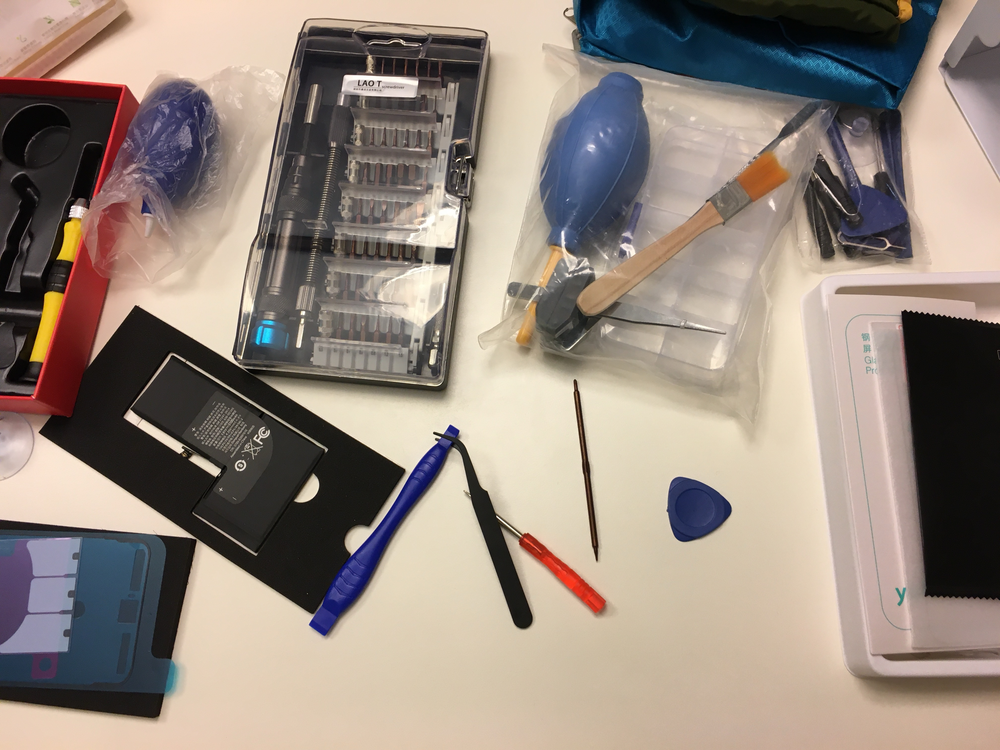

Assembling iPhone from parts
As a lifelong enthusiast of technology, the evolution of smartphones has always fascinated me. In recent years, my smartphone has become an indispensable tool, seamlessly integrating into every aspect of my life. Yet, amidst the convenience and innovation, I've often pondered the intricate process behind the creation of these devices. How are they meticulously assembled, piece by piece, to form the sleek and sophisticated gadgets we hold in our hands?
Driven by curiosity and a thirst for knowledge, I embarked on a journey to unravel the mystery behind smartphone assembly. My quest led me to explore the intricate world of iPhone construction, where precision engineering meets cutting-edge technology.
The Journey Begins
The journey began with research – delving into the intricate anatomy of the iPhone and understanding each component's role in its functionality. From the vibrant display to the powerful processor, every element plays a crucial part in delivering the seamless user experience that defines the iPhone.
Through extensive research and study, I gained a comprehensive understanding of the internal components that make up an iPhone, including:

iPhone parts
- iPhone motherboard
- iPhone display
- iPhone battery
- iPhone camera
- iPhone speaker
- iPhone buttons
- iPhone housing
- iPhone screws
- iPhone adhesive
- iPhone tools
Sourcing Components
Armed with knowledge, I embarked on the next phase of my endeavor: sourcing the necessary components. Assembling an iPhone from scratch requires meticulous attention to detail and access to genuine parts. Scouring online marketplaces and specialized stores, I carefully curated a collection of components, ensuring authenticity and quality.
I traveled to Shenzhen, China, home to the world's biggest electronic market – Huaqiangbei electronics market. Here, I endeavored to find, buy, and gather the different iPhone parts. It was a daunting task, especially considering it was my first time visiting the bustling market and conversing with sellers in Mandarin. However, armed with bravery and determination, I navigated through the labyrinthine alleys, searching for the best prices and negotiating with vendors.

Huaqiangebei electronics market
While some parts, like the motherboard, proved elusive in the physical market, I turned to Taobao, China's largest online marketplace, to find one for a reasonable price.
Assembly Process
With all the components in hand, I was ready to tackle the challenging task of assembly. This was where the real excitement began – bringing together the pieces to create a fully functional iPhone.
Tools for assembling iPhone
Assembling the Motherboard
The first step in the assembly process was to assemble the motherboard. Gathering all the necessary parts, I carefully attached the display to the motherboard and connected the camera, speaker, and buttons. With everything in place, I secured the motherboard to the housing using screws and adhesive, ensuring a snug fit and optimal functionality.
Installing the Battery
After successfully assembling the motherboard, the next crucial step was installing the battery. Handling the battery with care, I placed it into the housing and connected it to the motherboard. Taking extra precautions, I ensured that the battery was securely fastened in place using adhesive, guaranteeing stability and safety.
Each step required precision and patience as I meticulously pieced together the intricate puzzle of circuitry, glass, and metal. From affixing the display to securing the motherboard, every connection was scrutinized, every component aligned with meticulous care.

Installing the display
Yet, the journey was not without its challenges. Navigating the labyrinth of cables and connectors tested my patience, while fine-tuning the assembly demanded unwavering attention to detail. However, with perseverance and determination, I overcame each obstacle, inching closer to my goal with every twist and turn.
This marked significant progress in the assembly process, bringing me one step closer to completing my iPhone from parts. Each meticulous step filled me with a sense of accomplishment, knowing that I was creating something truly remarkable from scratch.
Culmination
Finally, the moment of truth arrived – the culmination of hours of research, dedication, and meticulous craftsmanship. With bated breath, I powered on the device, a surge of anticipation coursing through me. And as the screen flickered to life, illuminating the room with its vibrant glow, a sense of triumph washed over me.

Starting up the assembled iPhone
In that moment, I realized the true beauty of the journey – the joy of exploration, the thrill of discovery, and the satisfaction of creation. As I held the assembled iPhone in my hands, I marveled at the convergence of technology and craftsmanship, a testament to human ingenuity and innovation.
Conclusion
My journey to assemble an iPhone from parts was more than just a technical endeavor – it was a testament to the power of curiosity, the spirit of exploration, and the limitless potential of human creativity. It reaffirmed my belief in the power of curiosity to drive innovation and push the boundaries of what is possible. And as I reflect on the challenges and triumphs of my journey, I am filled with a sense of pride and gratitude for the opportunity to be part of something truly extraordinary.